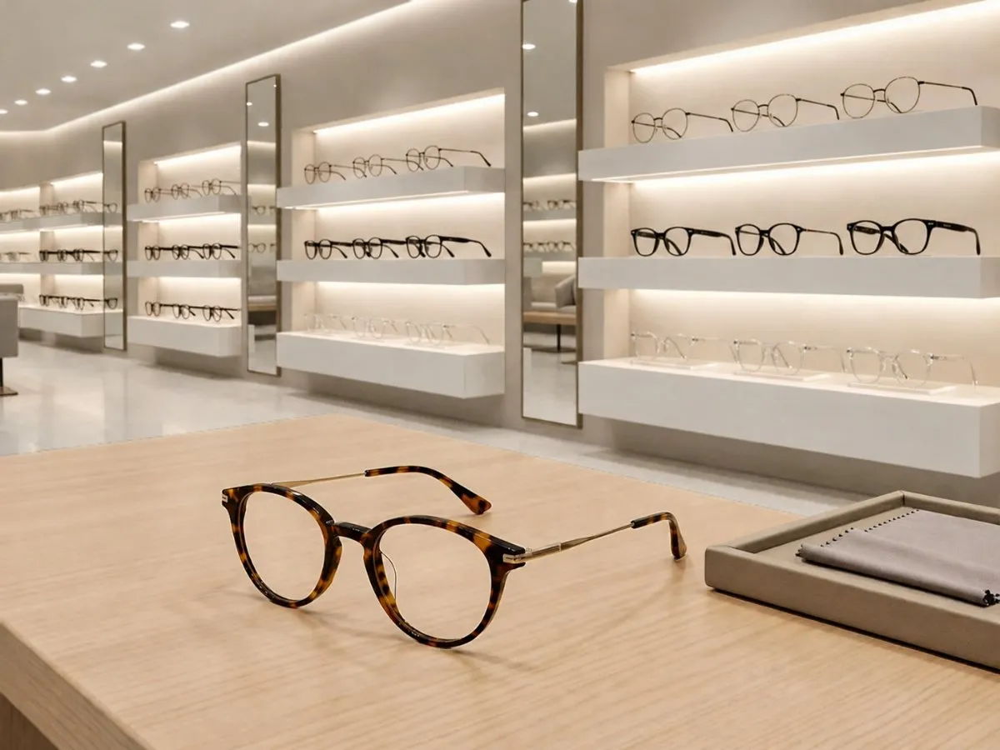

Opticien in Nijmegen: een goede brillenzaak in jouw wijk
Bijgewerkt op 21 november 2026.
Een nieuwe bril koop je niet elke maand, dus het loont om een opticien te kiezen die bij je past. Wil je een zaak dichtbij, iemand die uitgebreid je ogen onderzoekt of juist een snelle oogmeting op zondag? Per wijk zetten we de beste adressen op een rij.

Zo hebben we gekozen
We lazen in november 2026 de websites van de opticiens in onze bedrijvengids. In het centrum zitten er veel; daar kozen we zaken die iets eigens bieden. Voor een oogmeting maak je bijna overal eerst online een afspraak.
Centrum
Kock Bril Shop: de derde generatie
In de Augustijnenstraat staat inmiddels de derde generatie opticiens achter de toonbank. Bij de optometrist krijg je een uitgebreid oogonderzoek, zonder verwijzing van de huisarts.
Ze kijken niet alleen naar je sterkte, maar ook naar klachten als vermoeide ogen of hoofdpijn achter een beeldscherm.
Goed voor: wie last heeft van vermoeide ogen.
Optiek de Boer: de tijd nemen om te kiezen
Deze zelfstandige zaak in de Molenstraat heeft ruim zeventig jaar ervaring. Oogmeetkundigen meten je ogen, en bij het passen ligt er al een selectie monturen voor je klaar.
Een oogmeting kan zonder verwijzing. Op zondag en maandag is de zaak dicht.
Goed voor: wie rustig advies wil.
Harting: een eigen collectie en een orthoptiste
Bij Harting Oogmode & Oogzorg vind je een uitgesproken collectie, van kleurrijk en bijzonder gevormd tot randloos, met merken als Silhouette en Theo.
Het team bestaat uit opticiens, contactlensspecialisten, een optometrist en een orthoptiste, ook voor kinderen.
Goed voor: een opvallend montuur of een kinderbril.
Ace & Tate: een snelle oogmeting, ook op zondag
In de Lange Hezelstraat vind je de eigen collectie van het Amsterdamse brillenmerk. De oogmeting is kort, dus je kunt het makkelijk combineren met een middag in de stad.
De winkel is elke dag open, op zondag vanaf het middaguur.
Goed voor: een betaalbare, moderne bril.
Kooij Optiek: voor ogen en oren
Deze onafhankelijke zaak houdt zich al meer dan 85 jaar bezig met zien en horen. Je kunt er terecht voor brillen, contactlenzen, hoortoestellen en gehoorbescherming.
Via de online paskamer op de website probeer je monturen alvast thuis.
Goed voor: wie ook een hoortoestel nodig heeft.
Oost en Sint Anna
Geerling-optiek: een familiezaak sinds 1963
Aan de Daalseweg zit al sinds 1963 een familiezaak, die Paul Geerling in 1999 van zijn vader overnam. Gediplomeerde opticiens meten je ogen en denken mee bij het kiezen van een montuur.
Het aanbod loopt van voordelige budgetbrillen tot modieuze monturen. Op maandag is de zaak dicht.
Goed voor: wie in Oost woont.
Visser Contactlenzen: voor ogen die extra aandacht vragen
Aan de Sint Annastraat zit de vernieuwde hoofdvestiging van deze landelijke specialist in het aanmeten van lenzen, Het Huis van Visser.
Je kunt er terecht voor zachte en vormstabiele lenzen, ook als je ogen net wat extra aandacht vragen, en ook voor kinderen.
Goed voor: lastige ogen en kinderen met lenzen.
Hatert en Nijmegen-Zuid
Schoenmakers Optiek: veertig jaar aan de St. Jacobslaan
Aan de Sint Jacobslaan zit deze opticien al zo'n veertig jaar. Je kunt er een oogmeting inplannen en krijgt advies over welk montuur bij je gezicht past, ook voor kinderen.
Je parkeert voor de deur.
Goed voor: wie in Nijmegen-Zuid woont.
Van den Bergh: optometrist en audicien in Hatert
In Winkelcentrum Hatert zit al ruim 25 jaar deze zelfstandige opticien. Er werken drie opticiens, een optometrist en een audicien.
Je kunt er terecht voor een oogmeting, een uitgebreid oogonderzoek, kinderbrillen en contactlenzen. Op maandag is de winkel dicht.
Goed voor: een uitgebreid oogonderzoek dicht bij huis.
Dukenburg en Lent
Hans Anders: in winkelcentrum Dukenburg
In het overdekte winkelcentrum Dukenburg kun je terecht voor brillen, zonnebrillen, contactlenzen en hoortoestellen. Je parkeert onder het winkelcentrum, of je stapt uit op station Brabantsepoort aan de overkant.
Op donderdag is de winkel open tot acht uur 's avonds.
Goed voor: wie met de trein of auto komt.
Pearle: de opticien in Lent
Aan het Oranje Marieplein zit de opticien aan de noordkant van de Waal. Je vindt er brillen, zonnebrillen en contactlenzen, met monturen van merken als Ray-Ban.
Een oogmeting doe je tijdens een Goed Zicht Gesprek. Op maandag is de winkel dicht.
Goed voor: wie in Lent of Nijmegen-Noord woont.
Bij jou thuis
Bril Aan Huis: de opticien komt langs
Is naar de winkel gaan lastig, of kies je liever thuis? Dan komt opticien Pytr Thelissen op afspraak bij je langs. Sinds 2008 werkt hij zo in de regio Nijmegen.
Hij meet je ogen bij je thuis, geeft advies over de glazen en neemt een flinke collectie monturen mee.
Goed voor: ouderen en wie slecht ter been is.
Ook goed
- The Frame in de Broerstraat: een all-inclusive bril, ook multifocaal, en op donderdag open tot negen uur.
- By Bas Optiek in de Stikke Hezelstraat: monturen van ingetogen tot uitgesproken.
- Maalsen Optiek in de Ziekerstraat: een optometrist, en ook nachtlenzen.
- Eye Wish aan de Molenweg in Nijmegen-West.
Twijfel je tussen bril en lenzen? Lees ook wie de bril past, zet hem op.
Meer in onze gids winkelen in Nijmegen.
Veelgestelde vragen
Waar krijg je in Nijmegen een oogonderzoek zonder verwijzing?
Bij Kock Bril Shop in de Augustijnenstraat en Optiek de Boer in de Molenstraat. Ook bij opticiens met een optometrist, zoals Harting, Maalsen en Van den Bergh, kun je terecht voor een uitgebreid onderzoek.
Welke opticien in Nijmegen is op zondag open?
Ace & Tate en The Frame in het centrum zijn op zondagmiddag open. Hans Anders in de Burchtstraat opent elke laatste zondag van de maand.
Welke opticien in Nijmegen komt aan huis?
Bril Aan Huis komt op afspraak bij je langs, met een oogmeting en een collectie monturen.
Waar koop je een bril en een hoortoestel in Nijmegen?
Bij Kooij Optiek in de Van Welderenstraat, Van den Bergh in Hatert en bij Hans Anders.